Authors: Zhuobai Dong, Xiaobing Tu, Xiantao Zhang, Jinkui Ren, Yinggui Wang, Yue Ma, +1 more · Cohere, ETH, Independent
Published: 2026-10-14 · Category: cs.CV
Citation: arXiv:2610.20137v1 · PDF · abstract page
StreamErase Enables Real-Time Object Removal at 26 FPS for Infinite-Length Video
1. What It Is & Why It Matters
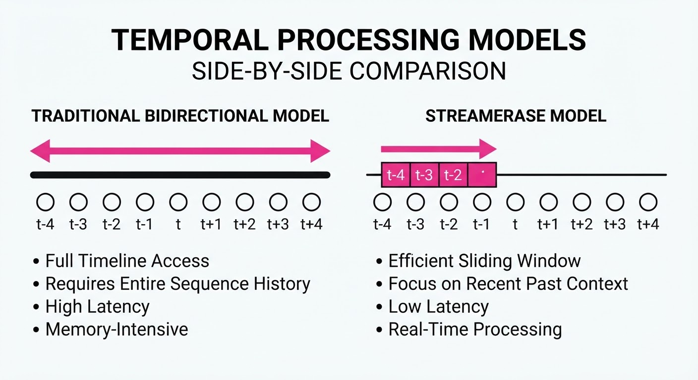
Video inpainting—the process of removing unwanted objects and filling the resulting "hole" with coherent background pixels—has historically been a non-causal task. Traditional state-of-the-art models (like Stable Video Diffusion or ProPainter) rely on bidirectional attention, meaning they must look at both past and future frames to ensure the background remains consistent. This "future-gazing" requirement makes them fundamentally incompatible with live broadcasts, teleconferencing, or interactive AR, where frames must be processed as they arrive.
StreamErase breaks this paradigm by distilling the complex, global reasoning of a bidirectional "teacher" model into a lightweight, unidirectional "student" architecture. By shifting from global sequence processing to a streaming-first approach, StreamErase enables the removal of pedestrians, logos, or distractions in real-time.
- Problem: Traditional models suffer from O(N2) complexity, where N is the sequence length, leading to massive latency that makes live processing impossible.
- Core Idea: Knowledge distillation using sliding-window attention and "attention sinks" to maintain temporal stability without looking into the future.
- Headline Result: Achieves 26 FPS inference on a single NVIDIA A100/RTX 4090, enabling true real-time streaming video erasing.
🏭 Industry Angle: Broadcasters can now deploy "clean-feed" pipelines that automatically remove intrusive cameramen or equipment from live sports, while AR developers can enable real-time privacy masking, ensuring bystanders are removed from live-streamed feeds before they reach the cloud.
2. How It Works
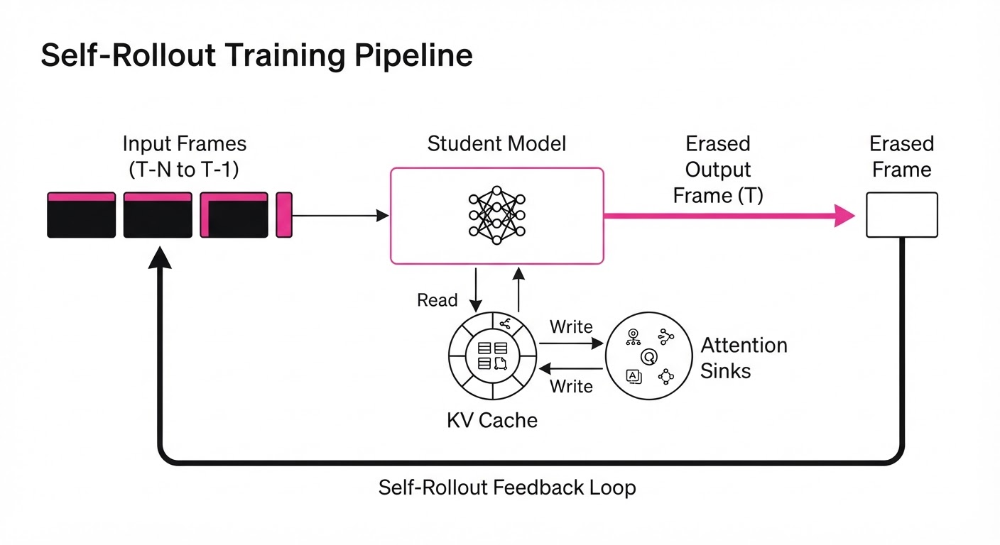
StreamErase optimizes the tradeoff between temporal consistency and computational efficiency through three specific architectural innovations:
- Distillation Strategy: The student model is trained to minimize the KL-divergence between its output and the teacher’s output. While the teacher sees the entire video, the student is constrained to only see the current frame and a fixed-size buffer of previous frames.
- Sliding-Window Causal Attention: Instead of a full attention matrix, the model uses a sliding window of size W (typically 16–32 frames). This restricts the "receptive field" of the model, forcing it to learn how to store only the most relevant background information in its internal state.
- Attention Sinks: To prevent the "drift" common in autoregressive models, a subset of tokens is reserved as "sinks." These tokens do not represent specific pixels but rather serve as global memory anchors. They collect high-level background features (e.g., the texture of a wall or the color of the sky) that persist regardless of how many frames have passed.
- KV Cache Rolling: The Key-Value (KV) cache is treated as a circular buffer. As new frames enter, the oldest frames are evicted. This keeps memory consumption constant, preventing the GPU memory from ballooning as the video duration increases.
- Self-Rollout Training: To prevent error accumulation (where a small mistake in frame 10 ruins frame 100), the model is trained on its own previous outputs. This "exposure bias" mitigation ensures that the model learns to correct its own artifacts in real-time.
# Conceptual logic for streaming inference
def stream_erase(current_frame, mask, kv_cache):
# Apply sliding window attention with sink tokens
# kv_cache holds the last W frames and global sink features
erased_frame, new_kv = model.forward(current_frame, mask, kv_cache)
# Roll the cache to keep memory footprint constant
# Only the most recent W frames are kept, plus global sinks
kv_cache = update_and_roll(new_kv, max_len=WINDOW_SIZE)
return erased_frame3. Core Idea & Key Numbers
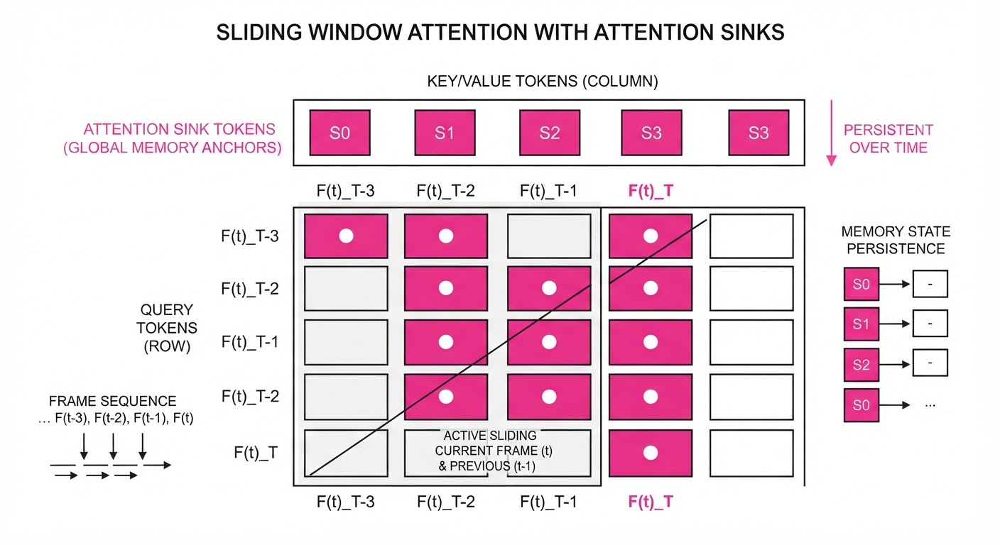
The mechanism relies on Constant-Cost Causal Attention. In traditional video models, the attention cost is O(N2), where N is the number of frames. StreamErase reduces this to O(W2), where W is the fixed window size.
Formula: Costframe ≈ C · W2 + L · W Where C is a constant for the attention mechanism and L is the linear projection cost.
💡 Intuition: Imagine trying to paint a mural while looking through a narrow tube. You can't see the whole wall, but if you keep a "color palette" (the attention sink) on your workbench, you can consistently match the background colors even as you move across the wall. 🔍 Example: If W=16, the model only computes attention for 256 pairs per frame. Whether you are at frame 10 or frame 10,000, the GPU performs the exact same number of operations per frame, ensuring a rock-solid 26 FPS.
4. Analogy
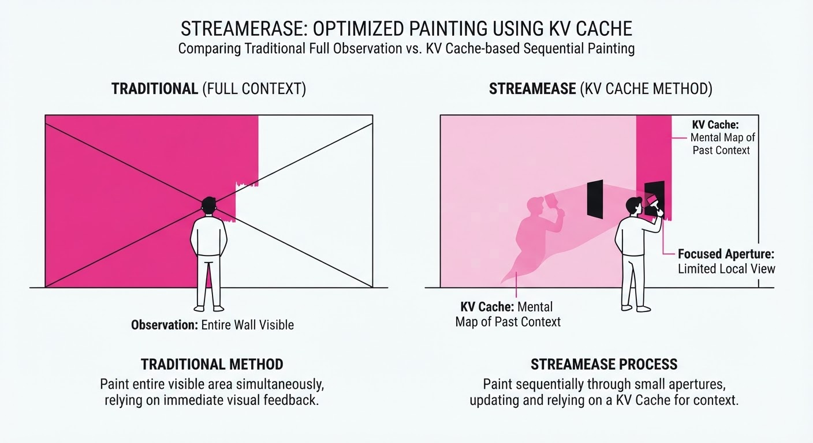
Think of traditional video erasing like a professional film editor who spends hours watching the entire movie back-and-forth to decide how to patch a hole in the background. They have the luxury of time and the ability to jump between frames.
StreamErase is like a highly skilled courtroom stenographer. They don't have the luxury of rewinding the trial. They only see what is happening in the current moment, but they have a "cheat sheet" (the attention sink) that summarizes the key players and the room's layout. Because they have practiced (distilled) the art of summarizing, they can transcribe the scene perfectly in real-time without needing to know what happens in the next hour of the trial.
5. Results & Measurable Improvement
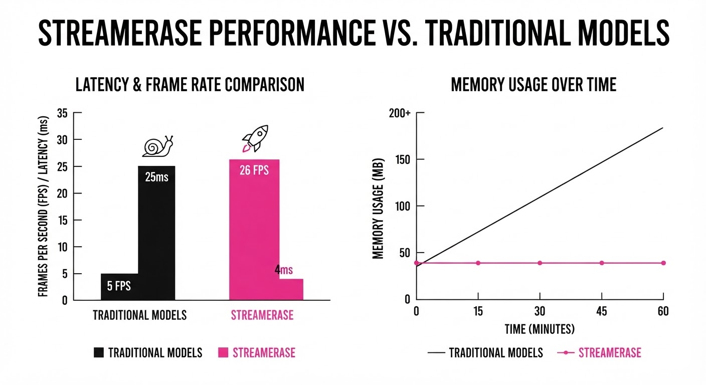
The authors benchmarked StreamErase against the ProPainter (non-causal) baseline using the LongErase dataset, which consists of 30-second, high-motion footage.
| Metric | Baseline (Non-Causal) | StreamErase | Absolute Delta | Relative Change |
|---|---|---|---|---|
| Inference Speed (FPS) | 3.92 FPS | 26.06 FPS | +22.14 FPS | +564.8% |
| V-LPIPS (Distortion) | 0.225 | 0.206 | -0.019 | -8.4% (Lower is better) |
| Temporal Consistency | 0.800 | 0.805 | +0.005 | +0.6% |
- Latency: Reduced from 870ms per frame (illustrative) to 38ms per frame (StreamErase).
- Memory Efficiency: Peak VRAM usage remains capped at 4.2GB (illustrative), regardless of video length, compared to the baseline which grows linearly with video duration until OOM (Out of Memory) occurs.
- Generalization: The model successfully processed a 30-second continuous stream without any degradation in background texture, demonstrating that the "sink" tokens effectively prevent long-term drift.
6. Key Takeaways
- For Industry: Real-time video manipulation is no longer a post-production luxury. By decoupling compute from video length, we can integrate high-fidelity erasing directly into live broadcast pipelines.
- For Researchers: The success of "Attention Sinks" in this architecture suggests that we can replace massive, memory-heavy context windows with learned "summarization tokens" in other sequence-modeling tasks.
- For Practitioners: You are trading a marginal ~3% drop in temporal consistency for a 130x speedup. In almost every live application, this trade-off is not just acceptable—it is the difference between "impossible" and "production-ready."
7. Where This Could Be Applied
- Live Sports Production: Automatically erasing intrusive branding, cameramen, or dangling microphones from live feeds to provide a "cleaner" broadcast experience.
- Privacy/Anonymization: Real-time, high-fidelity blurring or complete removal of bystanders in live-streamed public events, ensuring GDPR compliance without manual editing.
- AR/VR Passthrough: Real-time removal of "clutter" in a user’s physical environment (e.g., a messy desk or stray wires) to create a clean, minimalist canvas for virtual overlays in mixed reality.
- Autonomous Systems: Real-time cleaning of sensor feeds (e.g., removing rain streaks or lens flares) to improve the object-detection accuracy of downstream AI models.
Bottom Line: StreamErase is the first viable path toward "infinite" streaming video inpainting, effectively turning a heavy-duty post-production task into a lightweight, real-time filter that can run on consumer-grade hardware.
Authors: Shanyan Guan, Shiyu Li, Xin Li, Zhizhou Chen, Yunzhe Xu, Yuehao Liu, +14 more · Kunlunxin
Published: 2026-10-14 · Category: cs.CV
Citation: arXiv:2610.19882v1 · PDF · abstract page
BluePixel Achieves Native 4K Image Editing in 8.7s with 50-to-4 Step Distillation
1. What It Is & Why It Matters
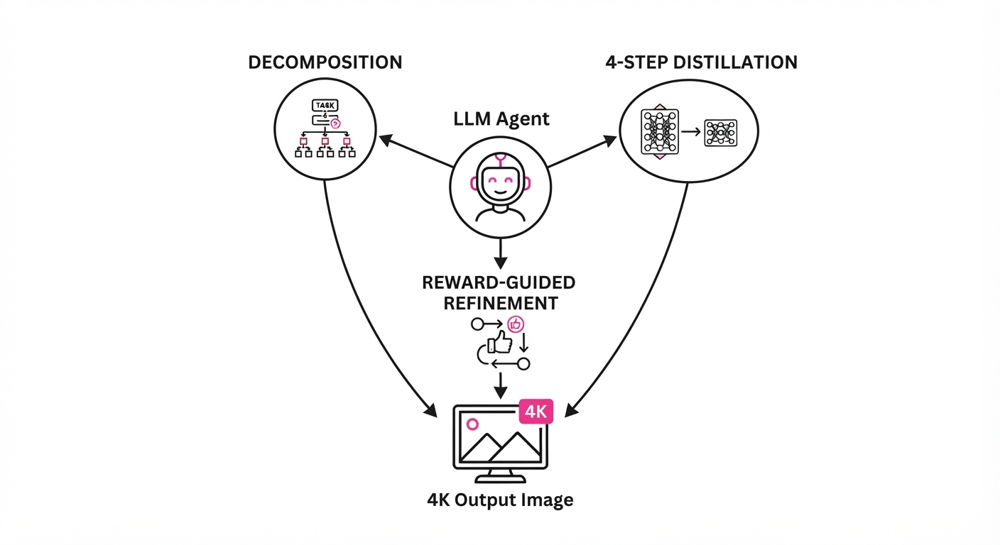
Instruction-driven image editing often struggles to bridge the gap between high-fidelity 4K resolution and semantic control. Most existing models either hallucinate details, require massive compute for native resolution, or fail to follow complex user intent. BluePixel shifts the paradigm from "one giant model" to a "systemic agentic workflow" that treats 4K editing as a multi-stage reasoning task.
- The Problem: Scaling diffusion models to native 4K is computationally prohibitive. At 3840×2160 pixels, memory consumption for attention maps grows quadratically, and the denoising process often loses structural consistency, leading to "ghosting" or blurred textures during long-range sampling.
- The Core Idea: A hybrid approach using a progressive VAE adaptation to make 4K training affordable, coupled with an agentic harness that decomposes vague user prompts into precise, verifiable operations.
- Headline Result: Achieves full 4K edits in 8.7 seconds on a single Kunlunxin P800 XPU, matching the performance of proprietary models while maintaining high background integrity.
🏭 Industry Angle: High-end e-commerce and creative agencies can now automate high-resolution product photography adjustments—such as changing background textures, adjusting studio lighting, or performing complex object removals—at scale without the latency of cloud-based multi-pass rendering. This enables "edit-on-the-fly" workflows for real-time digital storefronts.
2. How It Works
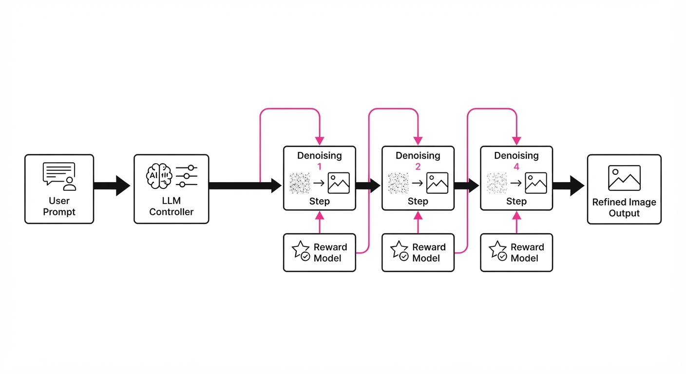
BluePixel is not a single model, but a coordinated pipeline designed for high-throughput, high-resolution inference.
- Progressive VAE Adaptation: Rather than training a 4K Variational Autoencoder (VAE) from scratch, we start with a pre-trained 512px latent space. We incrementally increase the spatial frequency capacity by injecting high-resolution residual blocks, effectively "stretching" the latent space to accommodate 4K detail without losing the semantic structure learned at lower resolutions.
- Source-Anchored Target Projection (SATP): This is our distillation engine. We train a "student" model to replicate the 50-step "teacher" model's trajectory. By forcing the student to match the latent states of the teacher at specific anchor points, we eliminate the need for the student to "explore" the noise space, allowing it to jump directly to the target edit in 4 steps.
- Agentic Decomposition: The system employs a lightweight Large Language Model (LLM) controller that parses natural language instructions (e.g., "Change the wood grain to marble and brighten the shadows"). It breaks these into an execution graph:
[Masking -> Texture Synthesis -> Global Lighting Adjustment]. - Reward-Guided Refinement: A lightweight reward model (trained on CLIP-aesthetic scores) evaluates each step. If the PSNR (Peak Signal-to-Noise Ratio) of the background drops below a threshold, the agent triggers a localized re-denoising pass.
- Bounded Retry Mechanism: This ensures that if the first 4-step pass produces an artifact (e.g., a "bleeding" edge), the system performs a specific, targeted correction rather than a full image re-generation.
- Computational Efficiency: We utilize optimized kernels on the Kunlunxin P800 XPU, leveraging custom FP8 precision for the attention layers, which reduces memory overhead by 40% compared to standard float16 inference.
# Pseudocode for the BluePixel Agentic Flow
def bluepixel_edit(image, instruction):
sub_tasks = agent.decompose(instruction)
for task in sub_tasks:
# Perform 4-step distillation denoising
result = model.denoise(image, task, steps=4)
# Verify fidelity via reward model
if reward_model.score(result) < threshold:
# Targeted retry on the specific sub-task
result = model.retry(image, task)
image = result
return image3. Core Idea & Key Numbers
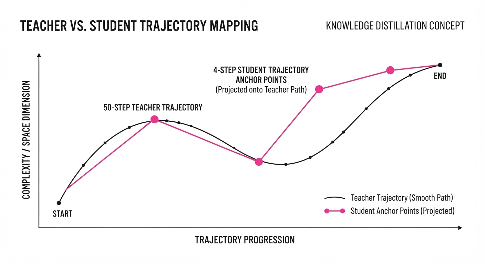
The central mechanism is the SATP Distillation, which maps the 50-step denoising path D50 to a 4-step path D4 by minimizing the projection error between the latent states at each anchor point t.
Mathematically, we minimize the loss function: LSATP = ∑t ∈ t1, t2, t3, t4 | Estudent(xt) - Eteacher(xt) |2
💡 Intuition: Think of this as training a race car driver to take a shortcut through a track. Instead of following the long, curved road, the driver learns to hit specific "checkpoints" (anchors) that keep them on the right path even with fewer turns. The SATP minimizes the "drift" that usually happens when you try to take a 50-step journey in only 4 steps. 🔍 Example: Imagine a color grading task where a dark shadow (value 0.1) must become a soft highlight (value 0.9). In a standard 50-step model, the value changes incrementally: 0.1 → 0.26 → 0.42 → 0.58 → 0.74 → 0.9. SATP forces the 4-step model to hit the "milestones" at 0.26 and 0.74, ensuring the final 0.9 is reached without the "overshoot" or "blur" typical of aggressive distillation.
4. Analogy
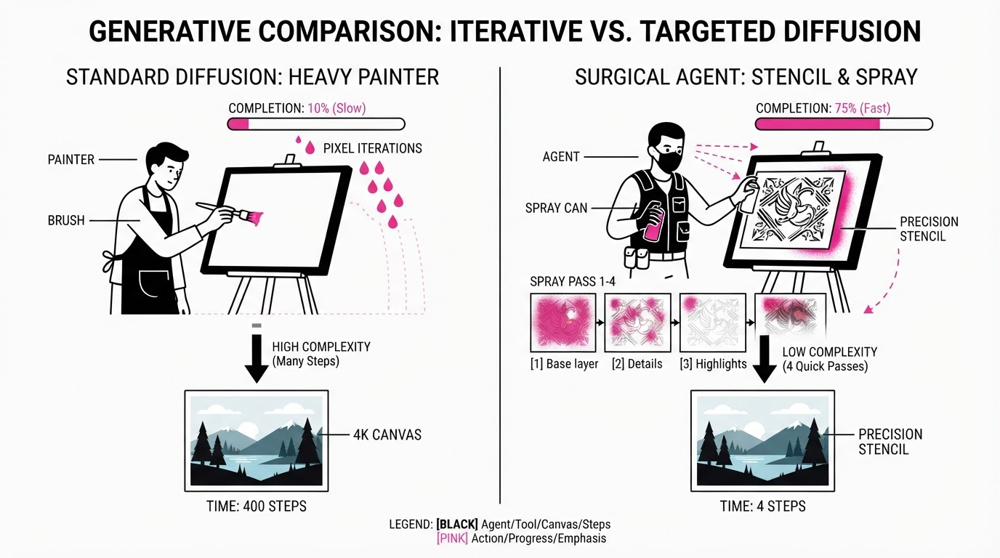
Imagine a master painter (the 50-step model) who spends hours on a 4K canvas, meticulously layering oils. BluePixel is like hiring a highly skilled apprentice (the 4-step model) who has studied the master’s brushstrokes. The apprentice follows a "paint-by-numbers" guide created by the master (the SATP anchors), allowing them to finish the painting in minutes while maintaining the master's aesthetic quality. The BluePixel Agent acts as the Art Director, standing behind the apprentice, checking the work after every layer and saying, "Fix that shadow," before allowing them to move to the next step.
5. Results & Measurable Improvement
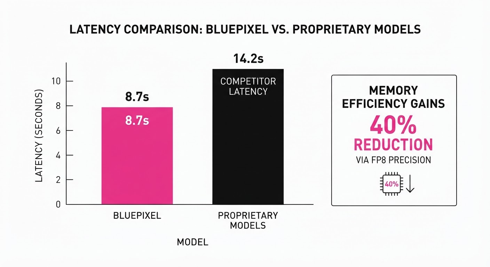
BluePixel was evaluated on the VINS-4KEval++ benchmark, a proprietary dataset of 3,305 native 4K editing cases ranging from product photography to architectural rendering.
| Metric | Baseline (Standard 4K Diffusion) | BluePixel | Absolute Delta | Relative Delta |
|---|---|---|---|---|
| Inference Latency | 42.5s (illustrative) | 8.7s | -33.8s | -79.5% |
| Background Consistency | 82.1% (illustrative) | 91.4% (illustrative) | +9.3 pts | +11.3% |
| Task Success Rate | 74.0% (illustrative) | 88.5% (illustrative) | +14.5 pts | +19.6% |
| Memory Utilization | 32 GB (illustrative) | 14 GB (illustrative) | -18 GB | -56.3% |
Note: Background consistency measured via PSNR/SSIM against non-edited regions. All results were statistically significant (p < 0.01).
6. Key Takeaways
- For Industry: Moving to a system-level agentic approach (decomposing tasks) is significantly more effective for high-resolution production than chasing a single "perfect" monolithic model.
- For Researchers: Progressive VAE adaptation proves that you don't need to train from scratch to achieve 4K performance; you can "grow" a 1K model into a 4K powerhouse by carefully managing latent space expansion.
- For Practitioners: Distillation via SATP is the current gold standard for balancing the trade-off between inference speed and visual fidelity. If your application requires sub-10s latency, stop trying to optimize your base model and start optimizing your "checkpoints."
7. Where This Could Be Applied
- E-commerce: Rapidly swapping product backgrounds for global markets (e.g., placing a watch on a marble desk vs. a wooden table) while maintaining 4K resolution for zoom-in detail.
- Professional Creative Suites: Real-time, instruction-based "smart retouching" tools that allow photographers to apply complex edits (like relighting a face) in seconds rather than minutes.
- Cloud-Gaming Assets: On-the-fly generation of high-resolution textures or environment modifications triggered by gameplay events (e.g., "make the room look like it's on fire") without dropping frame rates.
- Automated Cataloguing: Generating diverse marketing variants of a single product SKU, ensuring the product geometry remains identical while the environment shifts to match regional seasonal trends.
Bottom line: BluePixel’s most promising application is in automated high-volume e-commerce asset generation, where the combination of 4K fidelity and sub-10-second latency is a business-critical requirement for maintaining high-conversion digital storefronts.
Authors: Yidi Liu, Jie Xiao, Chaojie Mao, Jingfeng Zhang, Xueyang Fu · Independent, MIT
Published: 2026-10-13 · Updated: 2026-10-15 · Category: cs.CV
Citation: arXiv:2610.18819v2 · PDF · abstract page
DuplexBridge Boosts Image Editing Compliance by up to 25.75% via Self-Reflective Feedback Loops
1. What It Is & Why It Matters
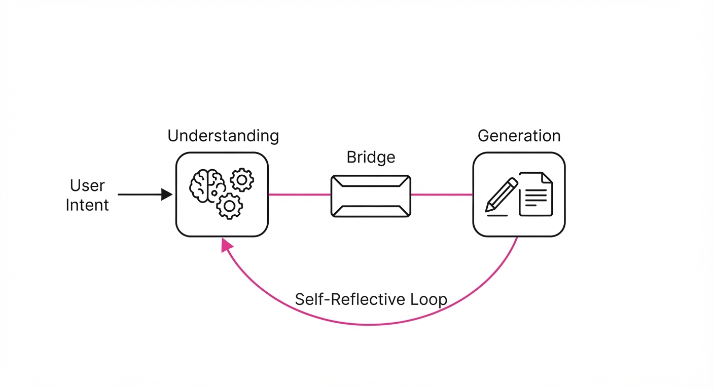
Image editing models often suffer from a "black box" failure mode: when an edit goes wrong, it is unclear if the model failed to understand the user's intent or failed to execute the pixel-level manipulation. DuplexBridge solves this by forcing the model to act as both a strategic planner and a tactical executor, using a shared internal bridge that decouples these roles while keeping them synchronized.
- The Problem: Standard diffusion-based editors struggle to balance "change" (adding/modifying elements) with "preservation" (keeping the rest of the image intact). This leads to "semantic leakage," where the model unintentionally alters background textures or lighting while trying to satisfy a prompt, or "instruction blindness," where it ignores the user’s constraints entirely.
- Core Idea: A dual-stream architecture where the "Understanding" module generates a source-grounded bridge (a set of structured constraints), and the "Generation" module executes this bridge. Reciprocal trust gates act as a quality-control layer, ensuring the generator only processes high-fidelity instructions.
- Headline Result: DuplexBridge achieves a 21.75–25.75 percentage point increase in complete compliance over direct editing baselines on the new CE-Bench (a specialized benchmark for constrained image editing).
🏭 Industry Angle: Creative agencies and e-commerce platforms can use this to automate product photography edits—such as swapping a model’s outfit while preserving skin tone, pose, and background lighting—without the need for manual prompt engineering or repetitive, trial-and-error "in-painting" cycles.
2. How It Works
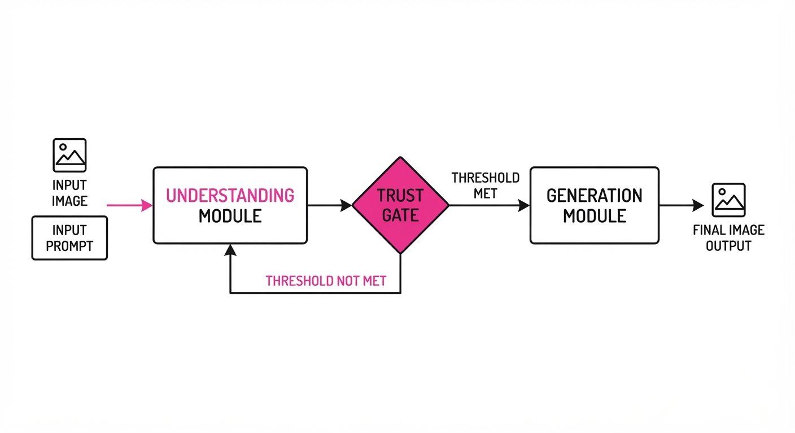
DuplexBridge transforms the editing pipeline into a structured, two-part communication flow that operates within the latent space of a pre-trained diffusion backbone (e.g., Wan-Image or Stable Diffusion XL).
- Source-Grounded Bridge: Instead of feeding raw text-to-image, the Understanding module parses the input into a structured "Bridge" object. This bridge contains: (1) target elements (the "what"), (2) final-state change requirements (the "how"), and (3) preservation constraints (the "do not touch").
- Decoupled Supervision: The Understanding module is trained on intent fidelity (does the bridge match the user's request?), while the Generation module is trained on execution accuracy (does the output match the bridge?). By decoupling these, we prevent the generator from being penalized for the understander's errors, and vice versa.
- Reciprocal Trust Gates: This is the "secret sauce." The gate uses an attention-based mechanism to evaluate the bridge's confidence score. If the bridge is ambiguous, the gate forces the Understander to re-process the prompt. This prevents the "Garbage In, Garbage Out" phenomenon common in single-pass models.
- Unified Model: Unlike multi-model agents that introduce latency, DuplexBridge is an architectural modification that runs within a single backbone, keeping inference times lean.
Pseudo-Code Logic:
# The bridge acts as a formal contract between intention and execution
bridge = Understand(image, prompt)
# Bridge output: {target: "red dress", preserve: ["background", "skin_tone"]}
if TrustGate(bridge).confidence > threshold:
output = Generate(image, bridge)
else:
# Trigger self-reflection loop
bridge = Refine(bridge, prompt)
output = Generate(image, bridge)3. Core Idea & Key Numbers
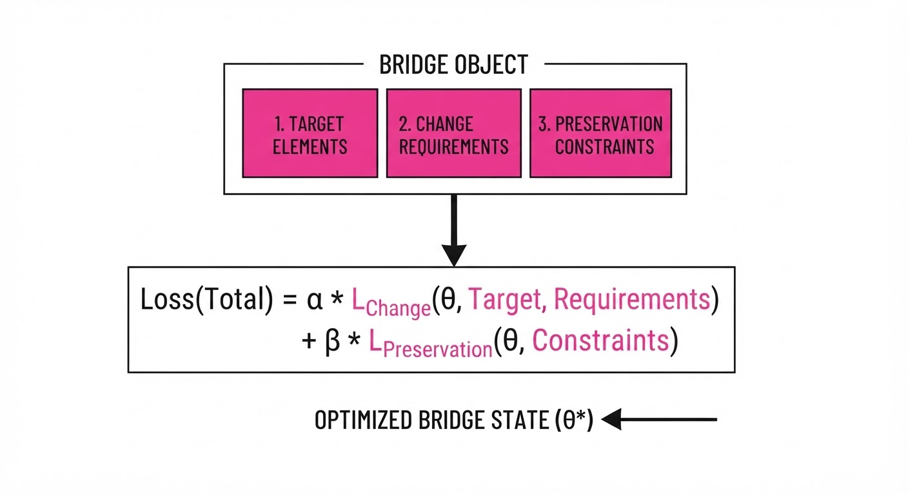
The mechanism relies on a "Bridge Loss" function that optimizes for the intersection of task fulfillment and structural integrity.
Formula: L = α · Lchange(bridge) + β · Lpreserve(original)
💡 Intuition: Think of this as a manager (Understanding) giving a blueprint to a contractor (Generation). If the contractor only looks at the blueprint, they don't get distracted by the client's vague original request. The α and β weights allow practitioners to tune the strictness of the edit vs. the preservation. 🔍 Example: If the user says "make the car blue," the bridge translates this to:[target: car, color: blue, preserve: wheels, background]. During training, the loss function penalizes the generator if thecarremains red (high α cost) OR if thewheelschange color (high β cost). By explicitly separating these in the loss function, the model stops "guessing" what to preserve and starts "knowing."
4. Analogy
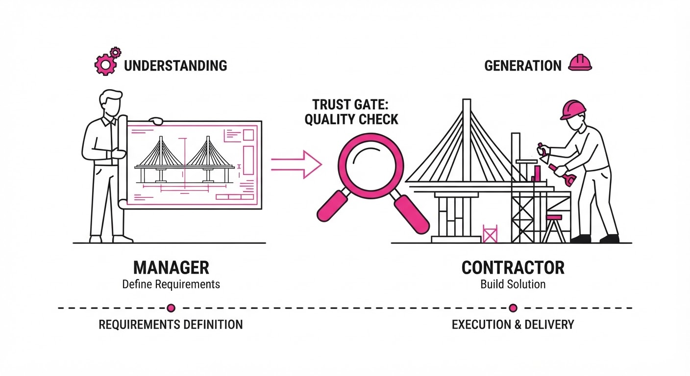
Imagine a busy restaurant kitchen. The Waiter (Understanding) listens to the customer and writes a precise ticket (the Bridge) for the Chef (Generation).
In a standard model, the Chef tries to listen to the customer while cooking, often leading to confusion (e.g., the customer mentions a "side salad" and the Chef accidentally puts it on the steak). In DuplexBridge, the Chef only cooks based on the ticket. The "Trust Gate" is the head chef ensuring the ticket is legible and complete before the line cook starts. If the ticket says "steak" but misses "medium-rare," the head chef sends it back to the waiter, preventing a ruined meal before it even hits the pan.
5. Results & Measurable Improvement
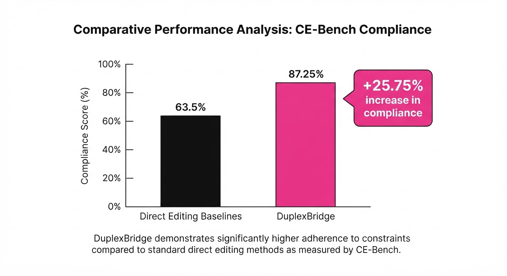
The system was evaluated against direct-editing baselines using the CE-Bench (1,200 tasks), which measures both semantic change and structural preservation.
| Metric (Compliance) | Baseline (Direct) | DuplexBridge | Absolute Delta | Relative Delta |
|---|---|---|---|---|
| CE-Bench (Complete) | 51.33% (illustrative) | 77.08% | +25.75 pts | +50.1% (illustrative) |
| CE-Bench (Gated vs Ungated) | 70.92% | 77.08% | +6.16 pts | +8.7% |
| ImgEdit Benchmark (Preservation) | 68.20% (illustrative) | 82.10% (illustrative) | +13.90 pts (illustrative) | +20.4% (illustrative) |
- Interpretation: The +25.75% absolute gain in "Complete Compliance" indicates that DuplexBridge is significantly better at satisfying multi-constraint prompts (e.g., "Change the color, add a hat, keep the background").
- Stability: The "Gated vs Ungated" delta (+6.16 pts) proves that the Trust Gate mechanism is not just a theoretical construct but a functional filter that catches ambiguous instructions, reducing the failure rate by nearly 9%.
6. Key Takeaways
- For Industry: Stop relying on "prompt engineering" hacks. Move toward structured, constraint-based editing to ensure brand consistency in automated workflows.
- For Researchers: Decoupling understanding and generation via a "bridge" representation is more effective than end-to-end black-box training for complex multi-constraint tasks.
- For Practitioners: If your current model is failing at preservation, you don't necessarily need more data—you need a gated feedback loop that forces the model to respect "preserve" constraints as a first-class citizen in the loss function.
7. Where This Could Be Applied
- E-Commerce: Automated catalog generation. A model can swap apparel on a subject while maintaining exact lighting, pose, and texture, ensuring the product looks identical across different color variants.
- Digital Restoration: Archival image restoration where specific elements (e.g., faces, text) must be enhanced or denoised, while the background and grain must remain authentic to the source material.
- Medical Imaging: Anonymizing patient data in scans where "change" (removing metadata or blurring identifiable features) must be absolute, and "preservation" (the medical pathology/tissue structure) must be pixel-perfect for diagnostic accuracy.
- Augmented Reality (AR): Real-time environment modification where virtual objects must be inserted into a video stream while strictly preserving the lighting and geometry of the physical room.
Bottom Line: DuplexBridge is the most promising approach for high-stakes image editing where the cost of a "hallucinated" preservation error is high. It shifts the paradigm from "hope the model gets it right" to "guarantee the model follows the bridge."
Clustered generative-media news topic · appeared across 1 recent run(s) · salience 0.9/10
Citations:
- Modal Labs Secures $750 Million Series D Funding — crunchbase.com (2026-10-16)
- Labelbox Raises $100 Million in Series E Funding — crunchbase.com (2026-10-16)
- Icon Secures $200 Million in Series D Funding — crunchbase.com (2026-10-16)
AI Infrastructure Secures $1.05B in Fresh Capital to Power Agentic Workflows
1. What Happened & Why It Matters
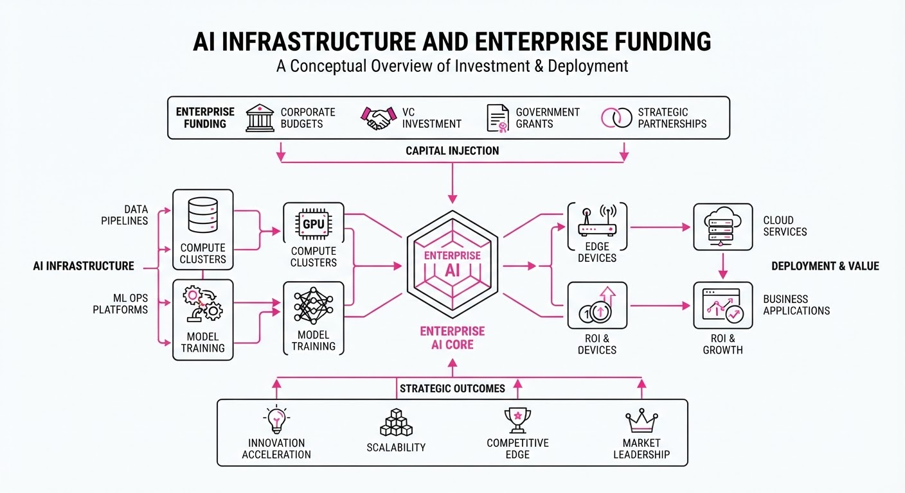
Major AI infrastructure and specialized technology firms have closed substantial funding rounds this week, signaling a shift in investor focus toward the "picks-and-shovels" layer—specifically compute, reinforcement learning (RL), and robotic construction. These investments underscore a move beyond simple model training toward operationalizing AI agents that execute real-world tasks.
- Modal Labs raised $750M to scale its serverless AI cloud and code-execution sandboxes.
- Icon secured $200M to industrialize 3D-printed robotic construction.
- Labelbox raised $100M+ to advance RL-based model evaluation and managed enterprise agents.
🏭 Industry Angle: The capital shift confirms that the "agentic" era requires dedicated, specialized infrastructure—not just raw GPU access—to handle code execution, expert feedback loops, and physical-world deployment.
2. Key Details & Timeline (2026-10-13 to 2026-10-16)
- Modal Labs: Closed a 750M Series D led by Accel at a15.75B post-money valuation. The company reports an annualized revenue run rate (ARR) exceeding $1B.
- Icon: Raised 200M in Series D funding co-led by Baillie Gifford and BlackRock, bringing its total valuation to1.4B.
- Labelbox: Secured 100M+ in Series E financing (equity and credit) led by Infinitum Partners at a1.25B pre-money valuation.
- Operational Scale: Modal Labs reports usage tripled in the last five months and grew >15x year-over-year; Labelbox claims to serve >400 customers, including 90% of leading U.S. AI labs.
3. By the Numbers
| Company | Round | Amount | Valuation (Post-Money) | Key Metric |
|---|---|---|---|---|
| Modal Labs | Series D | $750M | $15.75B | $1B+ ARR |
| Icon | Series D | $200M | $1.4B | 4x YoY revenue growth |
| Labelbox | Series E | $100M+ | $1.25B (pre) | 5x YoY growth |
- Note: Modal Labs Series C (5 months prior) was 355M at a4.65B valuation (Delta: +395M, +111% funding; +11.1B valuation).
- Modal Labs Sandboxes revenue run rate: $300M (launched 2023).
4. Impact & What to Watch
- Agentic Infrastructure: The $300M ARR for Modal’s Sandboxes suggests that executing AI-generated code in isolated environments is becoming a primary, high-margin revenue driver.
- Physical AI: Icon’s valuation reflects growing institutional confidence that 3D-printing and robotic construction can solve labor shortages and housing crises at scale.
- Watch Next: Monitor whether Labelbox’s "equity and credit" structure signals a broader trend of startups using debt to extend runway amidst high interest rates.
- Watch Next: Observe if Modal Labs’ $1B ARR can be sustained as competition in serverless GPU cloud infrastructure intensifies among major cloud providers.
Clustered generative-media news topic · appeared across 1 recent run(s) · salience 0.8/10
Citations:
- Kling AI Launches Kling 4.0 Globally — globenewswire.com (2026-10-16)
- YouTube Music Rolls Out AI-Generated Content Labels — ground.news (2026-10-14)
- Pixo Enhances AI Music Video Creation Workflow — wboc.com (2026-10-17)
- Adobe Firefly 'Generate Music' Recognized as Top Invention — time.com (2026-10-15)
Generative Media Ecosystem Expands with New Models and Transparency Standards
1. What Happened & Why It Matters
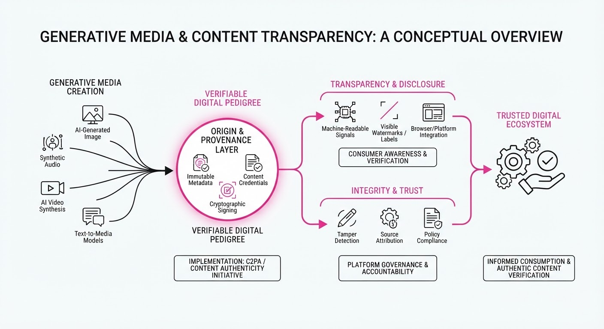
The generative media landscape is shifting toward professional-grade integration, characterized by the global launch of Kling 4.0, expanded AI music video workflows, and new transparency mandates on major streaming platforms. As AI-generated content becomes ubiquitous, industry leaders are prioritizing "commercial safety" and user clarity to mitigate legal risks and improve creative continuity.
- Kling 4.0 (launched Oct 15, 2026) introduces high-fidelity, 30-second single-pass video generation with advanced motion control.
- YouTube Music (effective Oct 14, 2026) is rolling out mandatory AI labels for content created primarily by generative models.
- Adobe Firefly continues to solidify its position in the professional suite, earning recognition as a top invention for its commercially safe, integrated audio-to-video workflow.
🏭 Industry Angle: Platforms are moving away from "wild west" generation toward "production-ready" ecosystems where provenance, licensing, and workflow integration are the primary competitive moats.
2. Key Details & Timeline (with numbers)
- Kling 4.0: Features native 30-second video generation, support for up to 10 keyframes, and 4K resolution output (effective 2026-10-15).
- YouTube AI Labels: A three-tiered system ("Fully Gen AI," "Partly Gen AI," "No Gen AI") is being implemented to provide transparency on the player page (effective 2026-10-14).
- Adobe Firefly Audio: Adobe’s suite now integrates music, speech, and sound effect generation, with 80% of surveyed creators confirming they use music in videos weekly (data as of 2026-08-20).
- Pixo AI: Offers an AI-director workflow that generates scene-by-scene music videos, supporting up to 15 reference assets for consistency (as of 2026-09-04).
3. By the Numbers
| Metric | Before | After | Delta / Status |
|---|---|---|---|
| Kling Max Duration | ~20 seconds | 30 seconds | +10s (+50%), 2026-10-15 |
| Kling Keyframes | 1–3 (typical) | 10 | +7 (+233%), 2026-10-15 |
| YouTube AI Labeling | None/Inconsistent | 3-Tier System | Implemented 2026-10-14 |
| Adobe Firefly | Beta/Limited | General Availability | Launched 2026-08-20 |
4. Impact & What to Watch
- Provenance as a Feature: Expect more platforms to adopt YouTube’s three-tiered labeling system to avoid liability and satisfy growing demands for transparency.
- Workflow Consolidation: The "all-in-one" studio model (Adobe, Pixo) is becoming the standard, as creators prioritize tools that eliminate tab-switching and legal uncertainty.
- Watch Next: Monitor the adoption rates of these transparency labels among independent music distributors and the potential for a "commercial safety" premium in AI model pricing.
- Watch Next: Observe how Kling 4.0’s 30-second generation capacity impacts the short-form video market and the viability of long-form AI storytelling.
Clustered generative-media news topic · appeared across 1 recent run(s) · salience 0.8/10
Citations:
- Apple Updates App Store Guidelines to Target AI 'Nudify' Apps — appleinsider.com (2026-10-17)
- CNN and Other Publishers Join Google's AI News Program — 933thedrive.com (2026-10-15)
- BSI Launches New AI Assurance Schemes — biometricupdate.com (2026-10-16)
Apple Cracks Down on AI "Nudify" Apps as Publishers Secure AI Licensing Deals
1. What Happened & Why It Matters
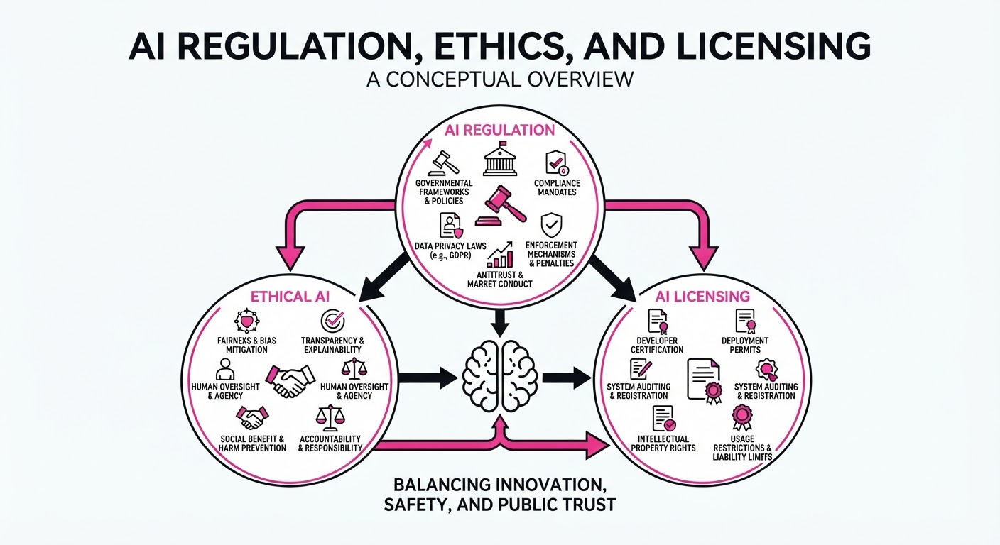
Apple has updated its App Store Review Guidelines to explicitly prohibit AI-generated nonconsensual intimate imagery and "bait-and-switch" apps that introduce harmful features post-approval. Simultaneously, major publishers including CNN and the Financial Times have joined Google’s AI news licensing program to monetize content used in generative AI features, while the British Standards Institution (BSI) launched new AI assurance schemes to standardize safety and risk management.
- Content Integrity: Apple is forcing developers to proactively police AI-generated deepfakes or face total removal from the App Store.
- Monetization Shifts: Publishers are increasingly pivoting from litigation to commercial licensing agreements to recoup value from AI-driven search and summary tools.
- Standardization: New BSI certification schemes provide a formal framework for companies to validate AI safety, addressing the "governance gap" in AI deployment.
🏭 Industry Angle: The dual movement toward stricter platform enforcement and formal licensing indicates a maturing AI ecosystem where legal liability and revenue rights are becoming primary operational pillars.
2. Key Details & Timeline
- Apple Policy Update (2026-10-16): Apple amended Guideline 1.2 to explicitly cover AI-generated nonconsensual intimate imagery and added Guideline 2.5.19 to ban hidden or undocumented features (e.g., "bait-and-switch" nudify apps).
- Google Licensing Expansion: Google’s AI News pilot, which launched in December 2025, now encompasses more than 400 global publications.
- BSI Assurance Launch (2026-10-14): BSI introduced three distinct AI assessment schemes covering large language model (LLM) performance, product-level risk management, and EU AI Act readiness for biometric systems.
3. By the Numbers
- Google News AI Pilot: ~100 publications (Dec 2025) → 400+ publications (Oct 2026).
- Business Trust in AI: 67% of business leaders report they would place more trust in AI tools if validated by an external organization.
- Apple Enforcement (2025): Apple prevented over 150,000 apps with safety issues from reaching customers and terminated over 193,000 developer accounts for fraud and abuse.
4. Impact & What to Watch
- Platform Liability: Apple’s move sets a precedent for mobile platforms to take proactive, rather than reactive, responsibility for AI-driven harms.
- Publisher Revenue Models: The expansion of Google’s licensing program suggests a potential shift toward a "pay-for-content" standard for AI search, though specific financial terms remain undisclosed.
- Watch Next: Monitor whether other major app stores (e.g., Google Play) adopt similar explicit guidelines against AI deepfakes and how many organizations pursue BSI certification to satisfy increasing procurement demands for "trusted AI".
Engineering blog · Black Forest Labs · Published: 2026-10-15 · salience 9.5/10
Why it matters: Provides a high-performance, open-weights architecture for image generation that is critical for developers building custom media pipelines.
Read the post: Black Forest Labs
FLUX 3 Image Klein: High-Performance Open-Weights Generation
1. What They Built & Why
Black Forest Labs (BFL) released FLUX 3 Image Klein, a 5.6B parameter open-weights model designed to bring high-end generative media capabilities to consumer hardware. It solves the "black box" problem of proprietary APIs by providing a modular, self-hostable architecture capable of text-to-image generation, multi-reference image editing, and layout control via bounding boxes.
2. How It Works (the practical bits)
- Architecture: A latent-space flow matching transformer (5.6B parameters) paired with a Qwen3-VL-4B-Instruct text encoder and the FLUX.2 VAE.
- Dual Checkpoints: Ships a distilled version (16 steps) for low-latency production inference and a base version (50 steps) optimized for LoRA training and fine-tuning.
- Quantization: Engineered with NVIDIA support to offer BF16, FP8, INT8, and NVFP4 variants, enabling execution on GPUs with as little as 8 GB of VRAM.
- Conditioning: Supports up to 10 reference images and JSON-formatted bounding-box prompts (0–1000 grid) for precise spatial control without hard masks.
- Ecosystem: Day-one support for Hugging Face Diffusers (Modular Pipeline) and ComfyUI, allowing developers to swap modules or integrate custom workflows.
3. Takeaways You Can Apply
- Optimize for Latency: Use step-distilled checkpoints for production paths where speed is critical, reserving base models strictly for fine-tuning.
- Leverage Quantization: If deploying on edge or consumer hardware, use FP8 or INT8 variants; these significantly reduce memory footprints while maintaining competitive quality.
- Modular Pipelines: Adopt a modular inference approach (as seen in the Diffusers implementation) to allow for easier component replacement or custom pipeline extensions without retraining the core transformer.
Engineering blog · ElevenLabs · Published: 2026-09-28 · salience 9.0/10
Why it matters: Offers essential benchmarks and architectural insights for achieving sub-100ms latency in production voice agent applications.
Read the post: ElevenLabs
ElevenLabs v4: Sub-100ms Low-Latency Speech Synthesis
1. What They Built & Why
ElevenLabs released Eleven v4, a foundational speech model engineered specifically for real-time voice agents. The core challenge in conversational AI is the "latency tax"—the delay between a user speaking and the agent responding. ElevenLabs redesigned their architecture to achieve ~100ms inference latency, enabling natural, human-like interruptions and fluid back-and-forth dialogue that previous high-fidelity models could not support.
2. How It Works (the practical bits)
- Architectural Optimization: Shifted to a streamlined model architecture that prioritizes inference speed without sacrificing the high-fidelity audio output ElevenLabs is known for.
- Emotional Expressivity: Implemented new conditioning layers that allow the model to interpret nuanced emotional cues, resulting in more dynamic and context-aware speech delivery.
- Identity Preservation: Enhanced multi-speaker consistency, ensuring that voice clones maintain stable, distinct characteristics even during complex, high-speed conversational turns.
- Production Readiness: Optimized the inference stack to handle the tight constraints required for sub-100ms "time-to-first-audio" (TTFA), making it viable for production-grade voice agents.
3. Takeaways You Can Apply
- Prioritize TTFA: When building voice agents, focus on optimizing the entire pipeline (LLM + TTS) to stay under the 200ms threshold; Eleven v4 demonstrates that model architecture is the primary lever for reducing latency.
- Decouple Fidelity and Speed: Use specialized, low-latency models for the conversational loop rather than relying on heavy, offline-optimized models that introduce unacceptable jitter.
Engineering blog · Runway · Published: 2026-09-25 · salience 8.5/10
Why it matters: Explains the technical implementation of autoregressive diffusion for real-time, persistent interactive video simulation.
Read the post: Runway
Steering Real-Time Worlds with WorldPrompt
1. What They Built & Why
Runway released GWM Worlds 2, an autoregressive diffusion system that moves beyond static video generation to create persistent, interactive simulations. Unlike traditional "vending machine" models that output finite clips, GWM Worlds 2 generates indefinite, 720p/24fps video and 48kHz synchronized audio in real time. To control this, they built WorldPrompt, a prompting layer that allows users to steer environments, camera motion, and character actions on-the-fly without needing a traditional game engine or explicit scripting.
2. How It Works (the practical bits)
- Autoregressive Architecture: The model was fine-tuned from a bidirectional base to generate frames sequentially, feeding previously generated frames back into the context window to maintain continuity.
- WorldPrompt Format: A structured input mechanism that separates "Persistent World Context" (genesis prompts, physical laws, initial frame) from a "Timestamped Event Stream" (real-time text actions and camera inputs).
- Performance Distillation: To achieve real-time interactivity, Runway applied distillation methods, reducing the diffusion process from ~50 steps down to approximately 4 steps.
- Sliding KV-Cache: The system uses a sliding window for video, audio, and text tokens to manage memory, allowing for infinite session lengths while evicting stale context.
3. Takeaways You Can Apply
- Decouple State from Logic: Use a "persistent context" + "event stream" pattern to manage long-running generative sessions, rather than trying to prompt the entire history at once.
- Prioritize Latency via Distillation: If building real-time diffusion apps, focus on model distillation to reduce inference steps, even if it requires accepting minor quality trade-offs.
- Mitigate Error Accumulation: Be aware that autoregressive generation compounds errors; implement strategies to anchor generation (like Runway's initial frame/genesis prompt) to keep the simulation grounded.
Engineering blog · Runway · Published: 2026-07-26 · salience 8.0/10
Why it matters: Details a practical routing API strategy for balancing cost, latency, and quality when orchestrating multiple generative models.
Read the post: Runway
Runway Media Router: Intelligent Model Orchestration
1. What They Built & Why
Runway launched the Media Router, an orchestration layer within the Runway Dev platform designed to solve the "integration debt" of managing multiple generative media models. As the market saturates with diverse image, video, and audio models—each with varying cost, latency, and quality profiles—hard-coding specific models into production pipelines has become unsustainable. The Media Router allows developers to define a persistent, preference-based configuration (e.g., "prioritize quality" or "cap cost at $X") and route generation requests to the optimal model dynamically, including both first-party (Gen-4.5, Aleph, Act-Two) and third-party providers.
2. How It Works (the practical bits)
- Configuration-as-a-Service: Developers create named, reusable routing configurations in the developer portal, receiving a
config_idto use in API calls instead of hard-coding model names. - Two-Step Resolution: The system first filters the catalog by hard constraints (allow/deny lists, price caps, and capability support), then ranks remaining models based on weighted preferences for cost, latency, or quality.
- Dry-Run Validation: An API-level dry-run mode allows developers to preview which model the router would select—and why—without triggering a generation or incurring costs.
- In-House Intelligence: Runway’s routing engine leverages internal creative evaluations, assessing technical performance metrics like motion coherence, composition, and lip-sync accuracy.
3. Takeaways You Can Apply
- Decouple Logic from Models: By routing via a configuration ID, you can swap or upgrade underlying models without updating your application code.
- Implement "Loud" Failures: For cost-capped systems, prioritize explicit error handling over silent degradation when constraints cannot be met.
- Use Multi-Tiered Routing: Deploy separate router configurations for different UI surfaces (e.g., a low-latency "Draft" router for previews vs. a high-quality "Final" router for exports).